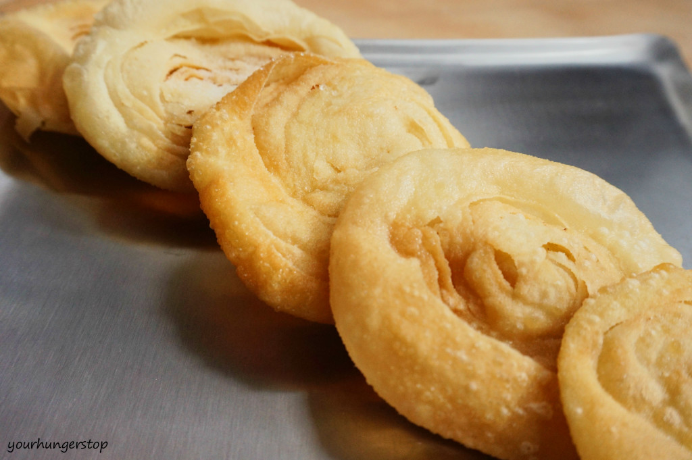
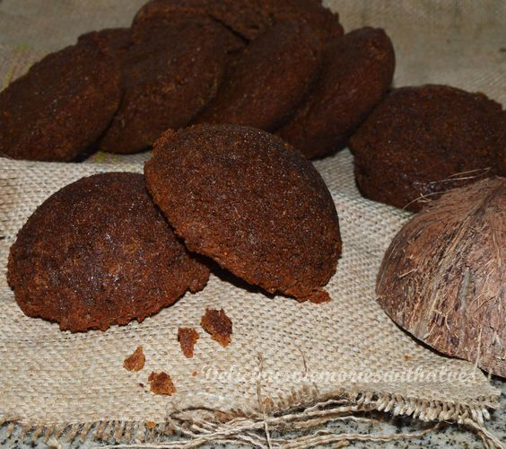

Coconut Burfi is a classic and traditional recipe of an Indian sweet that is prepared during
festivals and special occasions. Coconut and festivities go hand in hand because the sweets made from them are
auspicious and are used as offerings at sacred rituals performed during festivals.
Kopra Pak is one of my childhood favorite sweets that come every Diwali or Holi, it has
become a ritual at my home to make these. It is important to use freshly grated coconut to make this sweet as
opposed to using frozen or desiccated versions of the coconut. The taste and the juices that emanate from the
fresh coconut give the special richness to this delicacy.
Ingredients
3 cups Fresh coconut , grated
1-/2 cups Sugar
1/4 cup Water
1 teaspoon Cardamom Powder (Elaichi)
How to make Coconut Burfi Recipe - Kopra Pak/ Fresh Coconut Fudge
To begin making the Coconut Burfi Recipe, we will first make the sugar syrup. In a medium
size sauce pan; stir in the sugar and water with heat on medium. Once the sugar has melted continue to boil the
sugar mixture until the liquid reaches a two string consistency.
To know the right consistency - do the cold water candy test. Take few tablespoons of water
in a cup; add a drop of sugar syrup to water. If it holds its shape like a softball and doesn’t dissolve into
water then it’s at the right consistency.
Add the grated coconut, and cardamom powder to the sugar syrup. With the heat on medium
continue stirring frequently to prevent the mixture from sticking to the pan.
In 10 to 15 minutes, the mixture will thicken and will come away from the sides of the pan.
This happens with the coconut releasing its oil.
At this stage turn off the heat and be careful not to stir any longer on heat as the mixture
can get over cooked and will not set to the consistency required. The sugar will crystallize making the burfi
very hard.
Transfer the coconut burfi mixture to a tray (8 x 8 inch square which has a 2 inch min
height) greased with ghee.
Level the burfi mixture. Run a knife to cut into squares and allow it to cool and set on the
tray for more than a couple of hours.
Once cooled completely, separate the pre cut Coconut Burfi and serve for festivals and
special occasions.
Store the Coconut Burfi in air tight containers in the refrigerator for about 2 weeks.

fanori biscuit
Fenori recipe
Fenori is a popular Goan sweet which is mainly prepared during festive occasions like Ganesh
Chaturthi and Diwali. It is a crispy and crunchy snack item which is typically prepared few days in advance and
stocked up. These crispy crunchy sweet discs can be stored and consumed for around 15-20 days if stored in an
air-tight container. What makes a fenori a favorite snack is the delicate crispy layers sprinkled with powdered
sugar which are an absolute delight to bite on.
The Kurukkathi Burfee is your genie in a bottle when those magnanimous cravings for sugary
sweet burfees hit! Sweet, delicious and easy to prepare; get rid of your monsoon blues by relishing on these
absolutely delectable babies.

Goan Sweet Ball
2. Add Cardamom powder and salt to the ground wheat. 3. Grind the Coconut and jaggery to a
paste. Use toddy / sur to grind. 4. Transfer the jaggery mixture into a bowl. 5. Now add the wheat
Continue reading